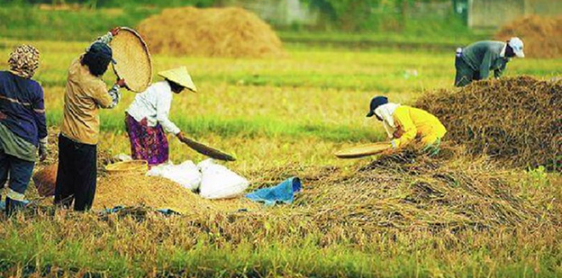

LINGKUNGAN · SOSIAL DAN KEMANUSIAAN
PPP Peduli Bumi dan Kemanusiaan
Merawat lingkungan sekaligus memperkuat kepedulian terhadap sesama melalui kegiatan penghijauan, pemberdayaan masyarakat, bantuan sosial, dan aksi kemanusiaan bersama.
Jelajahi Program